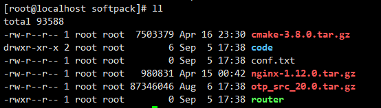
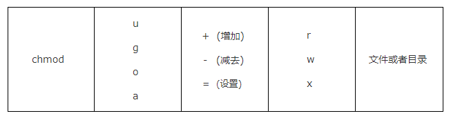

Linux 系统中的目录和文件的访问身份分为 user , group , others 分别简写为 u , g , o ;
还有一个 all 代表所有用户 , 简写为 a ;
每个身份对文件的权限又分为 : read , write , execute , 分别简写为 : r , w , x , 数字表示分别为 : 4 , 2 , 1 ;

显示的结果信息 , 一行是一个目录或者一个文件 , 每行用空格分隔为七列 :
第一列是权限信息 : 这部分的类似于 drwxr-xr-x 可以分为四部分 :
第一个字符是表示文件类型 , 可以为以下几种类型
- 文件 , b 存储设备 (如硬盘) , d 目录 , c 串口设备 (如键盘 , 鼠标) , l 链接文件
剩下的 9 个字符 , 可以平均分为三组 , 每组三个字符 , 字符由 rwx- 四个字符组成 , 分别代表是否有读取 , 写入 , 执行 , 无任何权限 ;
第一组定义了文件所有者对文件所拥有的权限
第二组为同用户组的用户对文件所拥有的权限
第三组为其他组用户对文件所拥有的权限
第二列是连接信息 ;
第三列是所有者是哪个用户 ;
第四列是文件所属用户组 , 一个所有者用户可能会属于多个组 , 这个属性是表面文件属于哪个组 ;
第五列是文件大小 , 单位默认是Byte ;
第六列是最后修改日期 , 如要显示完整的时间格式 , 可以用 ls -l --full-time ;
第七列是目录名或者文件名 , 如果名字前面有个 . 就说明这个是一个隐藏文件 ;
修改文件的权限用命令 chmod 来执行 , 有两种权限定义方式 : 数据方式和符号方式 ;
数字方式修改文件权限
像上面说说的 , 用三组 rwx 字符就可以表述出文件的 user , group , others 三种身份的用户所拥有的权限信息 , read 用 4 表示 , writer 用 2 表示 , execute 用 1 表示 , rwx 可以用 [4+2+1]=7 表示。r-x 可以用 [4+1]=5 表示 ;
那么某一个文件的三个身份的权限信息就可以用三个数字表示 , 例如 : 要将 temp.sh 文件的权限设置为所有者可读可写可以执行 , 同组可读可执行不可写 , 其他组的用户没有权限 , 可以运行如下命令 :
# chmod 750 temp.sh
符号类型修改文件权限

将 temp.sh 文件的的其他组用户添加可读权限 :
# chmod o+r temp.sh
将 temp.sh 文件的的所有用户添加可执行限 :
# chmod a+x temp.sh
修改文件的所有者
修改文件的所有者和所属组用命令 chown 用户名:用户组 文件/目录 :
# chown username file // 文件所有者为 username
# chown username:group file // 文件所有者为 username , 所属组为 group
# chown -R username:group /usr/local/mydir/ // 将目录所有者设置为该组用户
修改文件的所属组命令 chgrp 用户组 文件/目录 :
# chgrp group /dir/file